DAW · curso 3
3. CSS y Diseño Responsivo · DAW
3.1 Qué es CSS
CSS significa Cascading Style Sheets. Fue introducido en HTML 4.0 y propuesto por el W3C para separar contenido y formato:
- HTML describe la estructura y el contenido.
- CSS describe cómo se muestran los elementos HTML.
- El navegador carga HTML, aplica las hojas de estilo y pinta el resultado.
CSS controla color, tipografía, márgenes, tamaños, fondos, distribución y colocación de elementos. Su origen es asociado a Hakon Wium Lie.
Una regla de estilo tiene esta forma:
selector { propiedad: valor; propiedad: valor; }
| Parte | Función |
|---|---|
| Selector | Determina qué elementos se ven afectados. |
| Declaración | Uno o más pares propiedad: valor, separados por ;. |
Los comentarios se escriben con /* comentario */; son multilínea y pueden aparecer dentro de una línea.
3.2 Cómo añadir CSS, cascada y precedencia
Formas de aplicar CSS
| Forma | Uso |
|---|---|
| En línea | Usa el atributo style en un elemento concreto. Es puntual y poco reutilizable. |
| Hoja interna | Usa <style> dentro de head; afecta a la página actual. |
| Hoja externa desde HTML | Usa <link rel="stylesheet" href="hoja.css">; es la forma normal de trabajo. |
| Hoja externa desde CSS | Usa @import; sirve para modularizar hojas de estilo. |
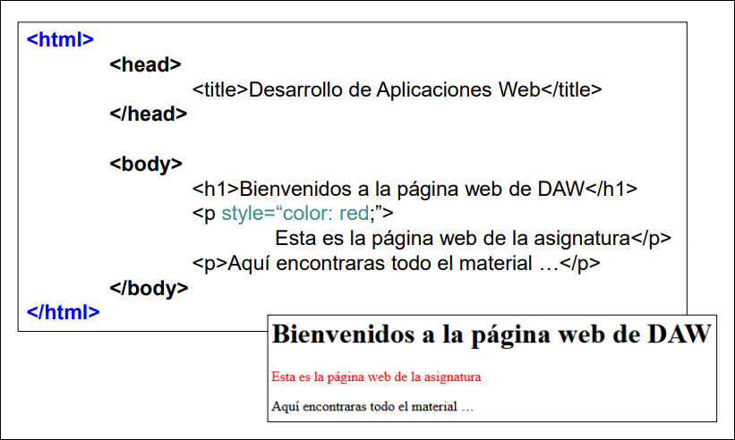
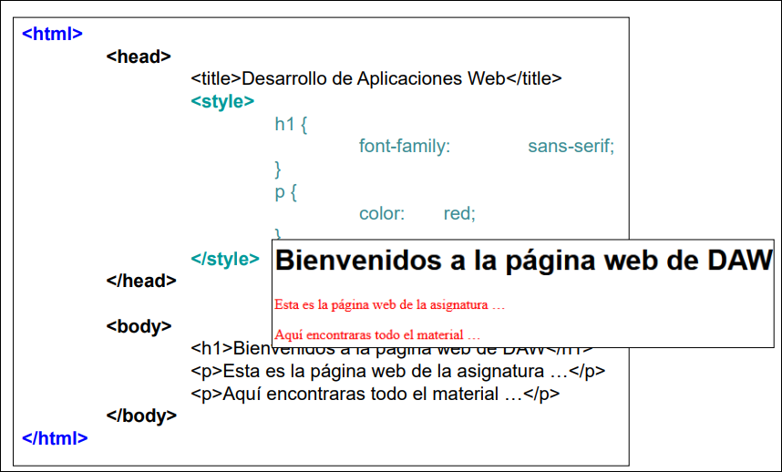
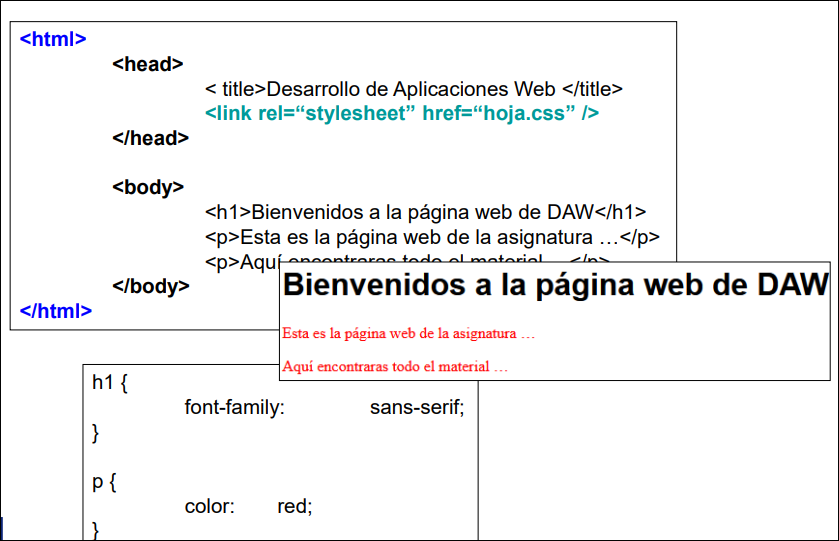
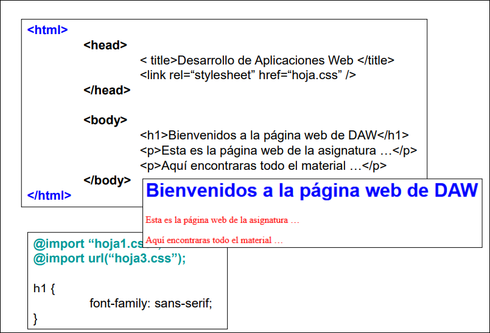
CSS también permite cargar hojas según el contexto:
| Caso | Ejemplo o idea |
|---|---|
| Según dispositivo | <link rel="stylesheet" media="screen" href="hoja.css">; valores como screen, print, handheld. |
| Estilos de sitio | Hoja común, por ejemplo sitio.css. |
| Estilos de página | Hoja específica, por ejemplo pagina.css. |
| Estilos alternativos | En Firefox se cita rel="alternate stylesheet" con title="nombre". |
Cascada y precedencia
Cuando varias reglas afectan a un mismo elemento, CSS decide con:
- origen e importancia;
- especificidad;
- orden de aparición.
Capas principales de la cascada:
Navegador -> Usuario -> Autor -> Autor + !important -> Usuario + !important -> Navegador + !important
Dentro de los estilos de autor, la precedencia práctica es:
| Criterio | Idea |
|---|---|
| Estilo en línea | Tiene prioridad sobre reglas internas o externas normales. |
| Especificidad | Gana el selector más específico: primero identificadores, luego clases/atributos/pseudoclases, después etiquetas/pseudoelementos. |
| Última regla | Si la especificidad empata, gana la regla que aparece más tarde. |
Valores especiales de propiedades:
| Valor | Uso |
|---|---|
initial |
Recupera el valor inicial de la propiedad. |
auto |
El navegador calcula el valor. |
inherit |
Toma el valor heredado del elemento padre. |
unset |
Se comporta como heredado o inicial según la propiedad. |
revert |
Intenta volver al valor de una capa anterior de la cascada. |
Unidades de medida
| Unidad | Significado |
|---|---|
% |
Relativa al tamaño del contenedor padre. |
vw / vh |
1% del ancho/alto del viewport. |
em |
Relativa al tamaño de fuente del padre o contexto. |
rem |
Relativa al tamaño de fuente raíz (html). |
fit-content |
Ajuste al tamaño exacto del contenido. |
px, cm, mm |
Unidades absolutas o físicas usadas según contexto. |
3.3 Selectores, pseudoclases y herencia
Los selectores CSS localizan elementos HTML a los que se quiere aplicar estilo.
Selectores básicos
| Selector | Regla | Elemento afectado |
|---|---|---|
| Universal | * {} |
Todos los elementos. |
| Agrupación | h1, h2, h3 {} |
Varios selectores comparten regla. |
| Por etiqueta | h1 {} |
Todos los h1. |
| Por clase | .header {} |
Elementos con class="header". |
| Por identificador | #principal {} |
Elemento con id="principal". |
| Por atributo | a[href*="usc"] {} |
Enlaces cuyo href contiene usc. |
Reglas prácticas:
iddebe ser único en el documento.classpermite reutilización y combinación, por ejemploclass="clase1 clase2".- La combinación
etiqueta.clase1.clase2selecciona etiquetas que tengan todas esas clases.
Combinadores
| Combinador | Significado | Ejemplo |
|---|---|---|
| Espacio | Descendiente, aunque haya niveles intermedios. | div a {} |
> |
Hijo directo. | div > a {} |
+ |
Hermano adyacente situado a la derecha. | div + a {} |
~ |
Hermanos posteriores situados a la derecha. | div ~ a {} |
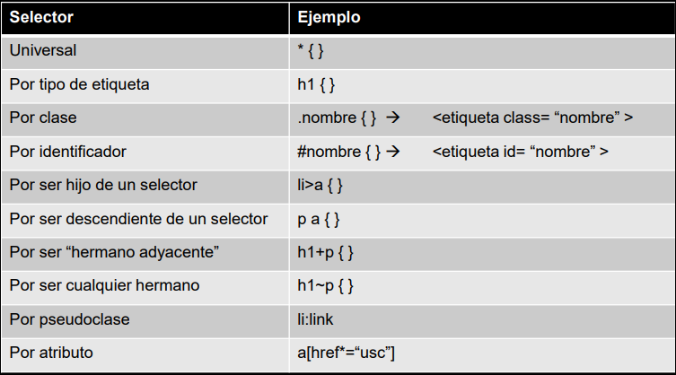
Pseudoclases y pseudoelementos
| Tipo | Casos citados |
|---|---|
| Pseudoclases interactivas | :link, :visited, :active, :hover, :focus. |
| Pseudoclases estructurales | :first-child, :last-child, :nth-child(n), :lang(). |
| Pseudoelementos de texto | ::first-line, ::first-letter. |
| Pseudoelementos de contenido | ::before, ::after, ::marker, ::selection, ::backdrop. |
Una pseudoclase define el estilo de un estado del elemento (selector:pseudoclase). Un pseudoelemento define el estilo de una parte concreta del elemento (selector::pseudoelemento).
Herencia
Algunas propiedades se heredan y otras no.
- Suelen heredarse:
color, tipografía y propiedades de texto. - No suelen heredarse:
margin,padding,border,background, dimensiones y posicionamiento. - Puede forzarse con
inherit.
Idea clave: la herencia importa mucho en tipografía y menos en layout.
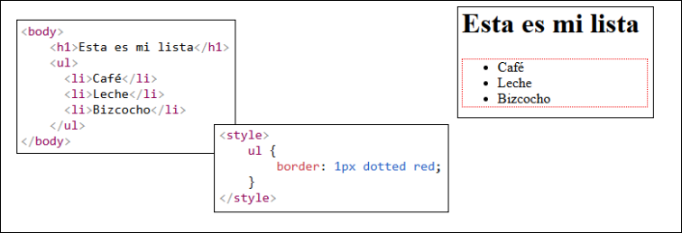
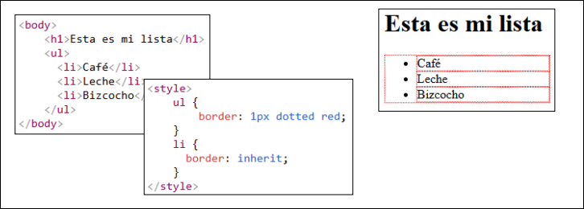
3.4 Modelo de caja y propiedades base
Todo elemento HTML se representa como una caja:
| Parte | Función |
|---|---|
| Content | Contenido real: texto, imágenes, etc. |
| Padding | Área transparente alrededor del contenido. |
| Border | Borde que rodea contenido y padding. |
| Margin | Separación exterior respecto a otros elementos. |
| Outline | Línea externa al borde, útil para foco o resaltado. |
El ancho total de la caja se calcula como:
width + padding-left + padding-right + border-left + border-right
El alto total se calcula como:
height + padding-top + padding-bottom + border-top + border-bottom
El margen afecta al espacio total ocupado, pero no forma parte del tamaño de la caja.
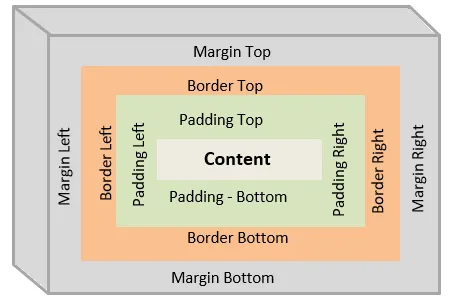
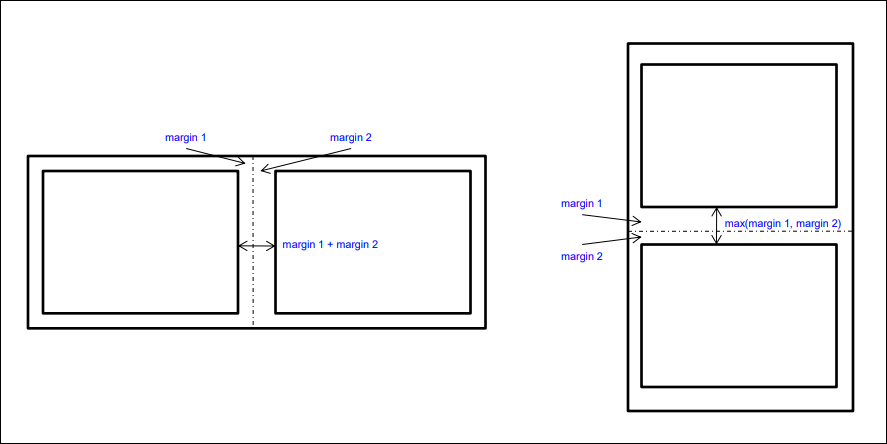
box-sizing
| Valor | Efecto |
|---|---|
content-box |
width y height solo miden el contenido; padding y border se suman aparte. |
border-box |
width y height incluyen contenido, padding y border. Suele ser más predecible. |
Propiedades de caja
| Propiedad | Uso |
|---|---|
width, height |
Tamaño del elemento; auto deja calcular al navegador. |
min-width, max-width |
Evitan tamaños demasiado pequeños o grandes; ayudan a impedir barras de desplazamiento innecesarias. |
min-height, max-height |
Equivalente vertical para altura. |
padding |
Resumen de padding-top/right/bottom/left. |
margin |
Resumen de margin-top/right/bottom/left; los márgenes verticales adyacentes pueden colapsar y quedarse en el mayor. |
border-style |
dotted, dashed, solid, double, groove, ridge, inset, outset, none, hidden. |
border-width |
thin, medium, thick o medidas como Xpx. |
border-color |
Color del borde. |
border-radius |
Bordes redondeados. |
outline-style |
Mismos estilos generales que border-style. |
outline-width |
Ancho del outline. |
outline-color |
Color del outline. |
outline-offset |
Distancia entre outline y borde; puede ser negativa. |
Las propiedades resumen de lados admiten:
- 1 valor: todos los lados;
- 2 valores: vertical y horizontal;
- 3 valores: superior, horizontal e inferior;
- 4 valores: superior, derecho, inferior e izquierdo.
Fondo, desbordamiento, color y visibilidad
| Propiedad | Uso |
|---|---|
background-color |
Color de fondo. |
background-image: url(...) |
Imagen de fondo. |
background-repeat |
repeat, repeat-x, repeat-y, no-repeat. |
background-position |
Posición inicial: left top, porcentajes, coordenadas, etc. |
background-attachment |
scroll, fixed, local; controla si el fondo se mueve con la página o con el contenido. |
background |
Propiedad resumen de las anteriores. |
overflow |
visible, hidden, scroll, auto; también existen overflow-x y overflow-y. |
border-collapse |
En tablas: separate o collapse; si se separan puede usarse border-spacing. |
opacity |
Transparencia entre 0.0 y 1.0. |
z-index |
Orden de apilado; solo funciona en elementos posicionados. Si no se indica, manda el orden del HTML. |
visibility |
visible, hidden, collapse; hidden oculta pero conserva espacio. |
Formas de indicar color RGB:
#rgb;#rrggbb;rgb(r, g, b)yrgba(r, g, b, a);rgb(r%, g%, b%)y variantes con alfa;- colores predefinidos.
3.5 display, posicionamiento y layout clásico
div, span, display y visibility
div es un contenedor genérico de bloque; span es un contenedor genérico en línea. No aportan significado semántico, pero sirven para agrupar y aplicar estilo.
| Propiedad/valor | Uso |
|---|---|
display: none |
Elimina el elemento visualmente y también el espacio que ocupaba. |
display: inline |
Hace que el elemento se comporte como elemento de línea. |
display: block |
Hace que el elemento se comporte como bloque. |
display: inline-block |
Se coloca en línea, pero conserva control de width y height. |
visibility: hidden |
Oculta el elemento, pero mantiene su espacio. |
visibility: collapse |
Elimina fila/columna/grupo de tabla o ítem flex como si fuera display: none. |
Posicionamiento
Por defecto, el navegador distribuye elementos siguiendo el flujo natural del fichero fuente.
Valor de position |
Comportamiento |
|---|---|
static |
Valor por defecto; sigue el flujo normal. |
relative |
Permanece en el flujo, pero puede desplazarse respecto a su posición natural. |
absolute |
Sale del flujo y se coloca respecto a su contenedor padre posicionado más cercano; se resume como relativo al contenedor padre. |
fixed |
Sale del flujo y se coloca respecto a la ventana del navegador. |
sticky |
Se comporta como relative hasta cierto scroll y luego como fixed. |
Nota
El tío te chanta esto y se queda tan ancho, es jodido expresar un concepto tan mal que locura.
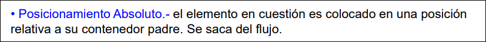
Un elemento puede ser contenedor de otros elementos aunque no tenga position definido.
Pero para que un hijo con position: absolute lo tome como referencia de posicionamiento, el contenedor debe estar posicionado, es decir, tener un position distinto de static.
Ejemplo habitual:
.contenedor {
position: relative;
}
.hijo {
position: absolute;
top: 0;
left: 0;
}
Si el contenedor no tiene position: relative, absolute, fixed o sticky, el hijo buscará otro ancestro posicionado. Si no encuentra ninguno, se posicionará respecto al bloque inicial de la página.
La localización se especifica con top, right, bottom y left.
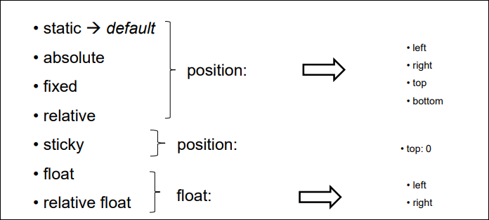
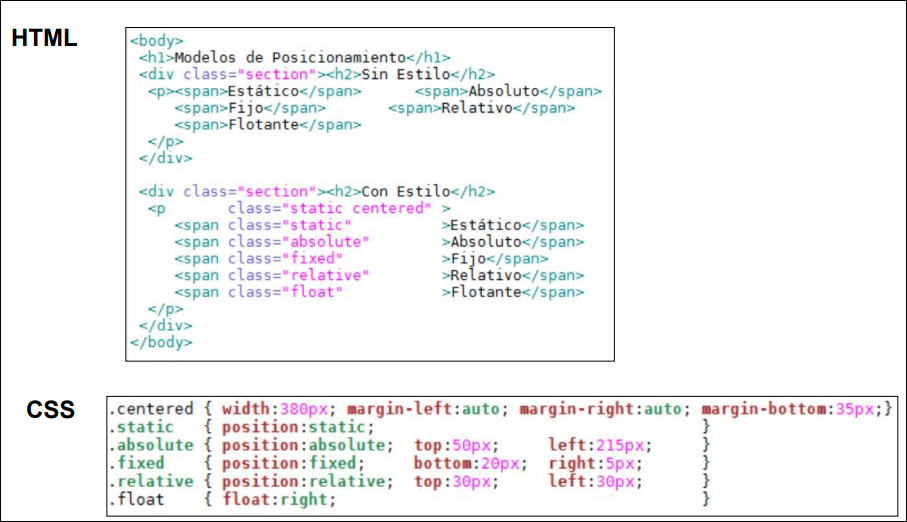
float y clear
| Propiedad | Uso |
|---|---|
float |
Hace flotar un elemento a left, right o none, elevándolo sobre la página. |
clear |
Controla qué ocurre con elementos colocados junto a flotantes: left, right, both, none. |
float desplaza elementos de bloque cercanos para ocupar el hueco que deja; los elementos de línea lo rodean. Si se combina con position: relative, parte de una posición relativa. Hoy se usa sobre todo para texto alrededor de imágenes o mantenimiento de layouts antiguos.
clear: left; /* baja si hay un float a la izquierda */
clear: right; /* baja si hay un float a la derecha */
clear: both; /* baja si hay floats a cualquier lado */
clear: none; /* valor normal */
CSS3 y prefijos de navegador
Algunos efectos de CSS3 dependían históricamente del navegador y podían necesitar prefijos:
-moz-: Firefox;-o-: Opera;-webkit-: Safari y Chrome;-ms-: Internet Explorer.
3.6 Texto y tipografía
Las fuentes se agrupan en familias:
| Familia | Rasgo |
|---|---|
sans-serif |
Líneas limpias. |
serif |
Serifas en vértices. |
monospace |
Todas las letras con el mismo ancho. |
cursive |
Imitan escritura a mano. |
fantasy |
Decorativas. |
font-family debe listar varias fuentes: primero la deseada y al final una familia genérica. Los nombres compuestos se colocan entre comillas. Para fuentes externas se usa @font-face, indicando el nombre y la URL de la fuente.
Cualquier símbolo no presente en el teclado puede obtenerse mediante Unicode: &#numero o &#xnumero.
| Propiedad | Uso |
|---|---|
font-size |
Tamaño: xx-small, small, medium, large, Xpx, Xrem, Xvw, etc. |
font-weight |
Grosor: normal, bold, bolder, lighter, 100 a 900. |
font-style |
normal, italic, oblique. |
font |
Resumen de font-style, font-variant, font-weight, font-stretch, font-size, line-height, font-family. |
color |
Color del texto. |
text-align |
Alineación horizontal: left, right, center, justify. |
text-align-last |
Alineación horizontal de la última línea. |
vertical-align |
Alineación vertical: baseline, medidas, sub, super, top, etc. |
text-decoration |
Resumen de línea, color y estilo: none, underline, overline, line-through; blink está obsoleto. |
text-transform |
none, capitalize, uppercase, lowercase. |
text-indent |
Sangría de la primera línea. |
letter-spacing |
Espacio entre caracteres; en el PDF aparece como text-spacing. |
word-spacing |
Espacio entre palabras. |
line-height |
Espacio entre líneas. |
white-space |
normal, nowrap, pre, pre-line, pre-wrap. |
text-shadow |
Sombras: x y blur color, con posibilidad de varias sombras. |
direction |
Dirección de escritura: rtl o ltr. |
La tipografía afecta a la apariencia y al espacio que ocupa el contenido, por lo que también influye en el layout.
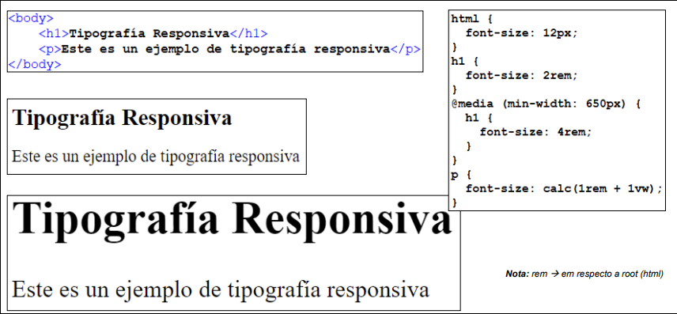
3.7 Diseño responsivo
El layout es la forma en la que se disponen los elementos de una página.
| Enfoque | Idea |
|---|---|
| Layout fijo | Tamaño absoluto de cajas; si cambia la pantalla aparecen barras o espacios desaprovechados. |
| Layout líquido | El navegador adapta tamaños al ancho disponible y a la cantidad de contenido. |
| Diseño responsivo | La página se adapta automáticamente al tamaño del dispositivo. |
La aproximación actual es mobile first: primero se diseña una versión simple para móviles, normalmente a una columna, y después se amplía a varias columnas en pantallas mayores.
Hitos:
- Cameron Adams (2004): diseños que se adaptan al tamaño de pantalla usando JavaScript para detectar tamaño y cargar CSS adecuado.
- Ethan Marcotte (2010): término "diseño responsivo", basado en rejillas fluidas, imágenes fluidas y solicitudes de tipo de medio.
Viewport
El viewport es el área visible de una página web para el usuario. La metaetiqueta habitual establece el ancho al dispositivo y el zoom inicial a 1:
<meta name="viewport" content="width=device-width, initial-scale=1.0">
Reglas @media
Las reglas @media aplican CSS solo si se cumple una condición:
@media not/only mediatype and (mediafeature) { CSS-Code; }
| Parte | Valores o uso |
|---|---|
mediatype |
all por defecto, print, screen. |
mediafeature |
width, height, orientation (portrait o landscape), resolution, entre otras. |
not |
Invierte la condición. |
only |
Evita problemas con navegadores antiguos; no tiene efecto práctico en navegadores modernos. |
and |
Combina tipo de medio y características. |
También pueden incluirse condiciones de medios directamente en etiquetas link para seleccionar hojas alternativas.
Puntos de ruptura
Los breakpoints son dimensiones a partir de las cuales se planifica un cambio de diseño.
| Punto | Dispositivo orientativo |
|---|---|
min-width: 320px |
Móviles pequeños. |
min-width: 480px |
Pequeños dispositivos y la mayoría de móviles. |
min-width: 768px |
La mayoría de tablets. |
min-width: 992px |
Ordenadores con pantallas pequeñas. |
min-width: 1200px |
Grandes dispositivos y pantallas grandes. |
Tipografía e imágenes responsivas:
- La tipografía responsiva adapta tamaños al dispositivo.
- Las imágenes responsivas adaptan el recurso o su tamaño al dispositivo; la solución actual se apoya en imágenes preparadas para distintos tamaños/orígenes.
3.8 Técnicas de layout responsivo
Flexible grids tradicionales
Mecanismo antiguo de responsividad basado en:
- reglas
@media; float;- abuso de medidas relativas en
%; - cálculo
width = 100 * ancho_deseado / ancho_pagina.
Funcionaba, pero era más frágil y menos mantenible que Flexbox o Grid.
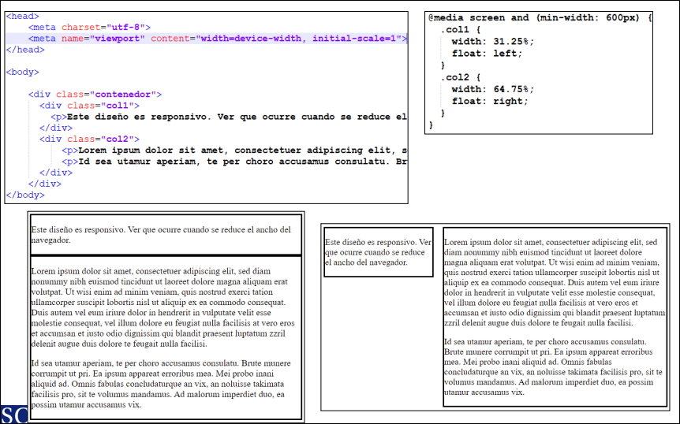
CSS Multicol
Multicol divide un contenedor en columnas y deja que el navegador calcule el reparto según el viewport.
| Propiedad | Uso |
|---|---|
column-count |
Número de columnas del contenedor. |
Es útil para texto continuo, artículos o diseños tipo periódico, pero no ofrece control completo de layout.
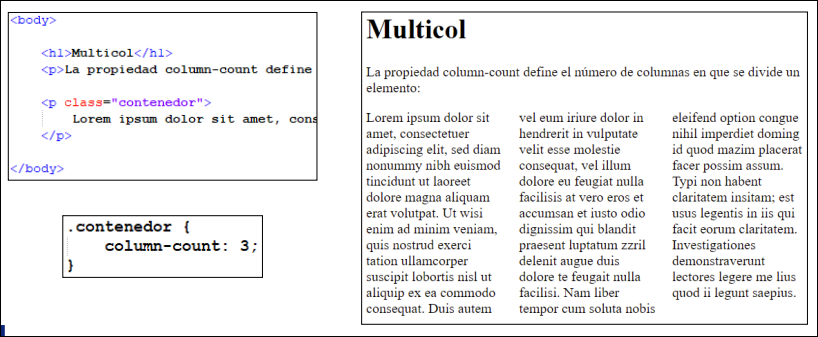
Flexbox
Flexbox facilita la disposición flexible en una dimensión: filas o columnas.
Una flexbox tiene:
- un contenedor flex con
display: flex; - varios ítems flex, que son sus hijos directos.
Propiedades del contenedor:
| Propiedad | Valores o uso |
|---|---|
flex-direction |
row, column, row-reverse, column-reverse. |
flex-wrap |
nowrap, wrap, wrap-reverse. |
flex-flow |
Resumen de flex-direction y flex-wrap. |
align-items |
Alinea ítems en el eje secundario: flex-start, flex-end, stretch, baseline. |
align-content |
Alinea líneas cuando hay varias por wrap: stretch, center, space-between, space-around, space-evenly. |
justify-content |
Reparte ítems en el eje principal: flex-start, flex-end, center, space-between, space-around, space-evenly. |
place-content |
Resumen de alineación de contenido. |
gap |
Resumen de row-gap y column-gap. |
Propiedades de los ítems:
| Propiedad | Uso |
|---|---|
flex-grow |
Cuánto crece el ítem respecto a los demás. |
flex-shrink |
Cuánto decrece el ítem respecto a los demás. |
flex-basis |
Longitud inicial del ítem. |
flex |
Resumen de flex-grow, flex-shrink y flex-basis. |
order |
Orden visual dentro del contenedor. |
align-self |
Alineación individual; sobrescribe align-items. |
Notas del apunte:
nowrapes el valor por defecto y puede hacer que los ítems encojan.wrappermite que bajen a otra línea.flex-shrink: 0impide que un ítem se encoja, aunque pueda salirse del contenedor.
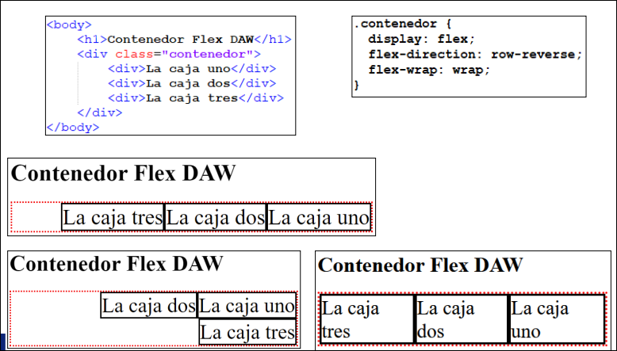
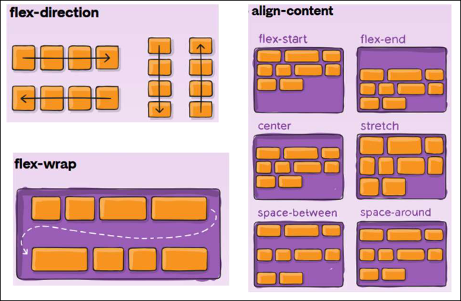
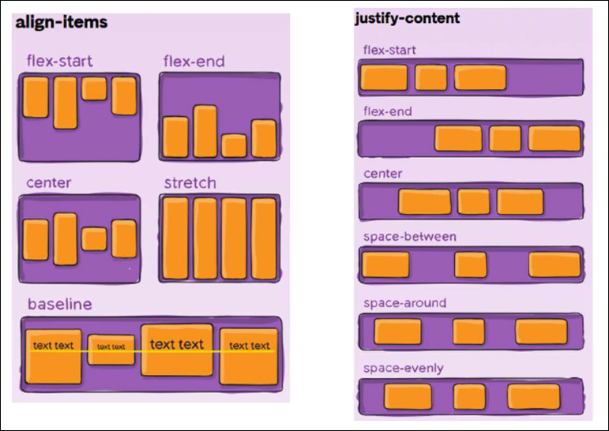
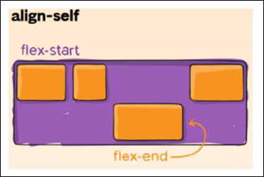
CSS Grid
Grid facilita layouts flexibles en dos dimensiones: filas y columnas.
Una grid tiene:
- un contenedor grid con
display: grid; - uno o más ítems grid, hijos directos del contenedor.
Propiedades del contenedor:
| Propiedad | Uso |
|---|---|
grid-template-rows |
Tamaño de filas. |
grid-template-columns |
Tamaño y número de columnas; admite px, %, auto y fr. |
grid-template-areas |
Define áreas con nombres; cada fila va entre comillas y . indica celda vacía. |
grid-template |
Resumen de las tres anteriores. |
align-items |
Alineamiento vertical por defecto: stretch, start, end, center, baseline. |
justify-items |
Alineamiento horizontal por defecto: stretch, start, end, center. |
align-content |
Alinea la rejilla verticalmente: start, end, center, stretch, space-around, space-between, space-evenly. |
justify-content |
Alinea la rejilla horizontalmente con valores equivalentes. |
gap |
Resumen de row-gap y column-gap. |
Propiedades de los ítems:
| Propiedad | Uso |
|---|---|
grid-column-start / grid-column-end |
Columna inicial y final. |
grid-column |
Resumen de las dos anteriores. |
grid-row-start / grid-row-end |
Fila inicial y final. |
grid-row |
Resumen de las dos anteriores. |
grid-area |
Nombre del ítem o área. |
justify-self |
Alineación horizontal individual; sobrescribe justify-items. |
align-self |
Alineación vertical individual; sobrescribe align-items. |
Notas prácticas añadidas:
frreparte el espacio disponible en fracciones.repeat(auto-fit, minmax(220px, 1fr))es un patrón útil para galerías responsivas.- Si el problema es una fila o columna, suele encajar Flexbox; si son filas y columnas a la vez, suele encajar Grid.
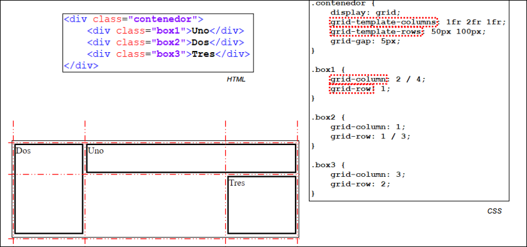
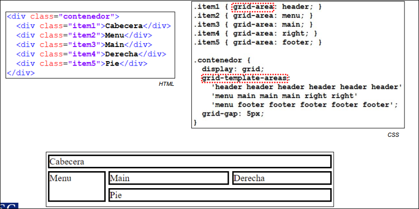
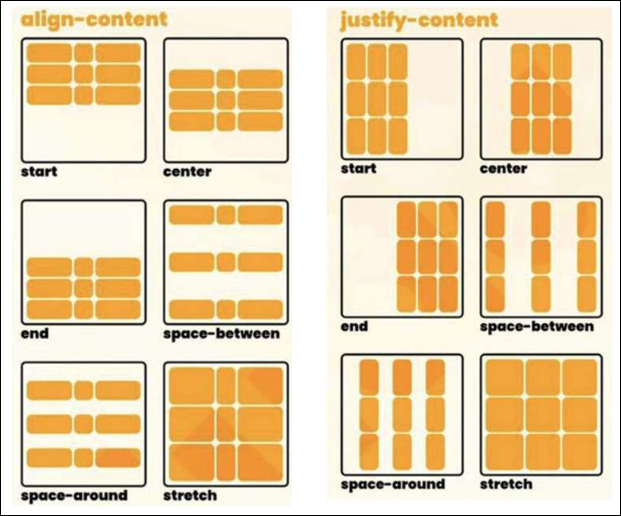
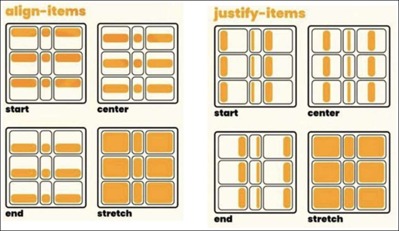
3.9 Frameworks CSS y Bootstrap
Un framework CSS es una biblioteca de reglas predefinidas apoyadas en clases HTML.
| Ventajas | Inconvenientes |
|---|---|
| Facilitan compatibilidad entre navegadores. | Importan código innecesario y aumentan ancho de banda. |
| Facilitan responsividad entre dispositivos. | Reducen parte del control sobre el diseño. |
| Simplifican el desarrollo. | Limitan opciones visuales si se usan sin personalizar. |
| Aportan fiabilidad y eficacia. | Pueden homogeneizar demasiado la interfaz. |
Bootstrap
Bootstrap es una librería orientada al RWD, especialmente a móviles. Fue creada por Mark Otto y Jacob Thornton en Twitter y liberada en GitHub en 2011.
Según el material:
- la versión usada actualmente en clase es Bootstrap 5, publicada en 2021;
- Bootstrap 5 aporta componentes nuevos, hoja de estilos más rápida y mayor capacidad de respuesta;
- es compatible con versiones estables recientes de navegadores y plataformas;
- no es compatible con Internet Explorer 11 y anteriores;
- cambió a JavaScript nativo en lugar de depender de jQuery.
Para integrarlo se añade la hoja CSS y, si se usan componentes interactivos, también el bundle JavaScript.
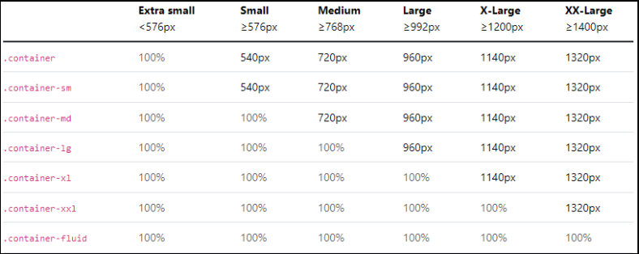
Contenedores, espaciado y layout
| Clase | Uso |
|---|---|
.container |
Contenedor con max-width adaptado a puntos de ruptura prefijados. |
.container-XX |
Variante según sufijo sm, md, lg, xl, xxl. |
.container-fluid |
Contenedor líquido con max-width: 100% en cualquier punto. |
Espaciados:
{propiedad}{lado}-{tamaño} para xs y {propiedad}{lado}-{punto-ruptura}-{tamaño} para sm, md, lg, xl, xxl.
| Parte | Valores |
|---|---|
| Propiedad | m para margin, p para padding. |
| Lado | t, b, l, r, x para izquierda/derecha, y para superior/inferior. |
| Tamaño | 0, 1, 2, 3, 4, 5, auto; se basan en $spacer. |
El layout de Bootstrap se basa en Flexbox y en una rejilla de hasta 12 columnas:
- crear un contenedor con
.containero.container-fluid; - crear filas con
.row; - definir columnas con
col-{dispositivo}-{numero}.
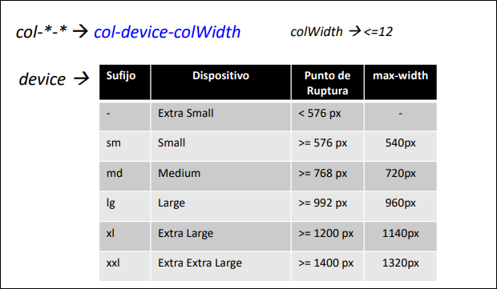
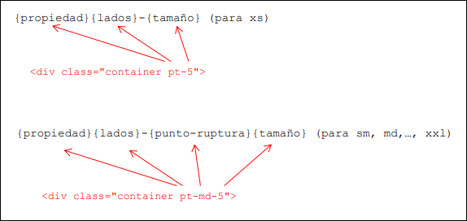
Propiedades y componentes fijados o facilitados por Bootstrap según el PDF:
- texto/tipografía:
rem = 16px,$spacer = 1rem,line-height = 1.5rem; - formatos de tablas;
- imágenes con redondeo de esquinas y marcos;
- párrafos resaltados mediante
jumbotron; - cajas con bordes redondeados mediante
well; - iconos con
glyphicon; - paginación y migas de pan con
paginationybreadcrumb; - desplegables con
dropdown; - barras de navegación con
navbarynavbar-*; - carruseles con
carousel-*.
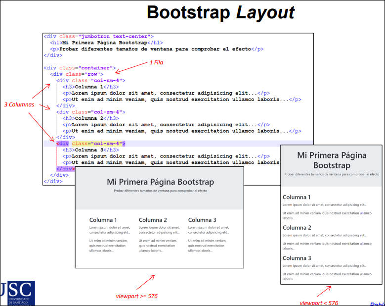
3.10 Validación y compatibilidad
Para validar CSS se puede usar:
http://jigsaw.w3.org/css-validator
También conviene recordar que muchas propiedades modernas ya no requieren prefijo en navegadores actuales, pero los prefijos históricos pueden aparecer en código antiguo, documentación o ejemplos heredados.